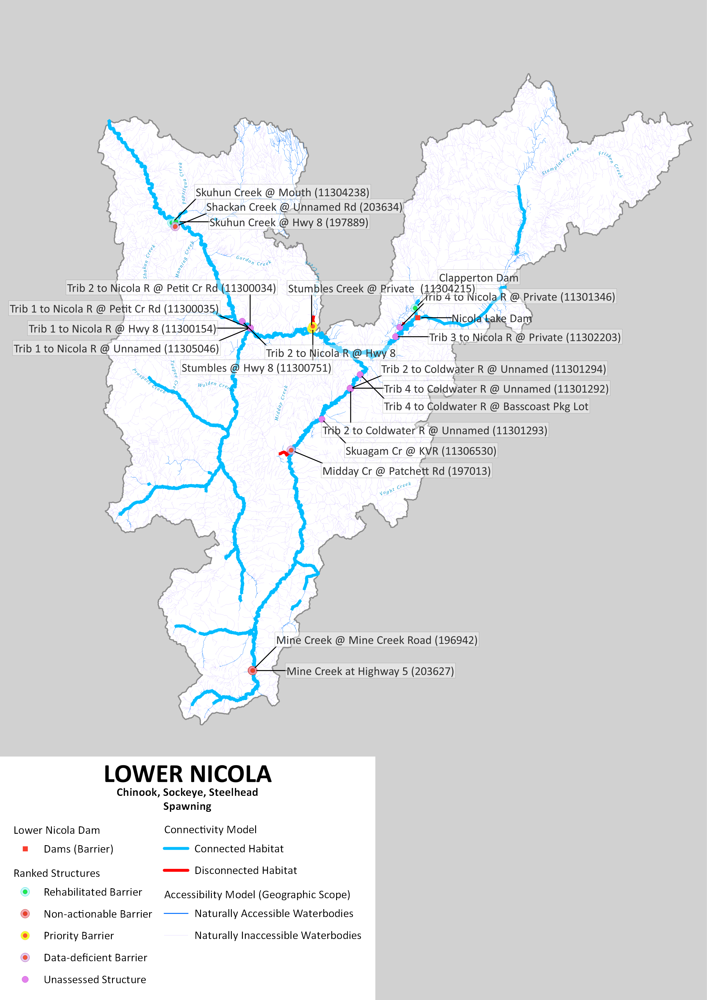
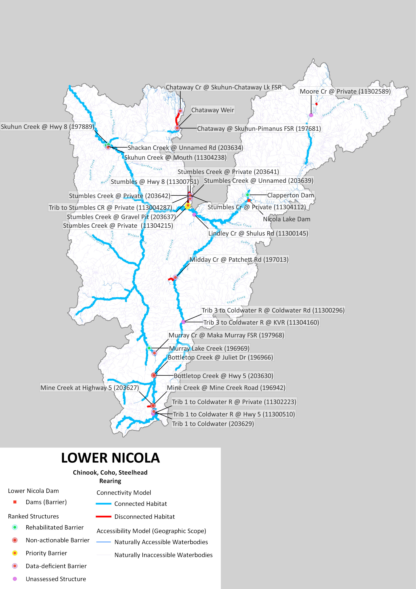

Focal Species | KEA | Indicator | Poor | Fair | Good | Very Good |
|---|---|---|---|---|---|---|
Pacific Salmon and steelhead | Available Off-channel Thermal Refuge | Total Area (m^2) of off-channel thermal refuge available | ? | ? | ? | ? |
Current Status: |
Current Connectivity Status
The Planning Team devised three Key Ecological Attributes (KEAs) and associated indicators to assess the current connectivity status of the watershed – Accessible Off-channel Thermal Refuge, Accessible Spawning Habitat, and Accessible Rearing Habitat. KEAs are the key aspects of anadromous salmonid ecology that are being targeted by this WCRP. The connectivity status for the Anadromous Salmonids KEAs were used to establish goals to improve habitat connectivity in the watershed and will be the baseline against which progress is tracked over time.
To support a flexible prioritization framework to identify priority barriers in the watershed, two assumptions are made: 1) any modelled (i.e., passability status is unknown) or partial barriers are treated as complete barriers to passage and 2) the habitat modelling is binary, it does not assign any habitat quality values. As such, the current connectivity status is refined over time as more data on habitat and barriers are collected.
Comments: A priority strategy is to develop an off-channel habitat layer for the watershed to be used to inform connectivity status in the future.
Focal Species | KEA | Indicator | Poor | Fair | Good | Very Good |
|---|---|---|---|---|---|---|
Pacific Salmon and steelhead | Available Spawning Habitat | % of total linear spawning habitat accessible | <25% | 25-50 | 50-75% | >75% |
Current Status: | 91.46% |
Comments: Indicator rating definitions are based on the consensus decisions of the Planning Team. The current status is based on the WCRP model output, which is current as of May 2026.
Focal Species | KEA | Indicator | Poor | Fair | Good | Very Good |
|---|---|---|---|---|---|---|
Pacific Salmon and steelhead | Available rearing Habitat | % of total linear rearing habitat accessible | <25% | 25-50 | 50-75% | >75% |
Current Status: | 93.74% |
Comments: Indicator rating definitions are based on the consensus decisions of the Planning Team. The current status is based on the WCRP model output, which is current as of May 2026.
In the Lower Nicola River watershed, 377.18 km of spawning habitat are currently connected to the ocean and 5.47 km are disconnected from it. This means that 98.6% of the 382.64 km of total habitat is connected.
In the Lower Nicola River watershed, 397.28 km of rearing habitat are currently connected to the ocean and 15.05 km are disconnected from it. This means that 96.4% of the 412.33 km of total habitat is connected.
Goals
Goal # | Goal |
|---|---|
1 | By 2031, the total area of groundwater-serviced off-channel thermal refuge accessible to anadromous salmonids will increase by 6,000 m2 in the Lower Nicola River watershed. |
2 | By 2025, the % of total linear spawning habitat accessible to anadromous salmonids will not decrease below 96% in the Lower Nicola River watershed. |
3 | % of total linear rearing habitat accessible to anadromous salmonids will increase from 83% to 90% within the Lower Nicola River watershed. |
Structure Count
In the Lower Nicola River watershed, 18 structures potentially disconnect spawning habitat. Of these, 2 are identified as barriers in need of rehabilitation (priority barriers), 2 are identified as barriers that do not warrant rehabilitation (non-actionable), and 14 require further field assessment.
In the Lower Nicola River watershed, 25 structures potentially disconnect rearing habitat. Of these, 2 are identified as barriers in need of rehabilitation (priority barriers), 5 are identified as barriers that do not warrant rehabilitation (non-actionable), and 18 require further field assessment.
Maps


Habitat Accumulation Curves

Habitat Accumulation Summary Table
Barrier ID | Site Name | Watershed Name* | Structure Status | Structure Count Ordered by Model Rank - Spawning and Rearing | Average Habitat Upstream of Structure - Spawning and Rearing | Actual Habitat Upstream of Structure - Spawning and Rearing | Structure Count Ordered by Model Rank - Spawning | Average Habitat Upstream of Structure - Spawning | Actual Habitat Upstream of Structure - Spawning | Structure Count Ordered by Model Rank - Rearing | Average Habitat Upstream of Structure - Rearing | Actual Habitat Upstream of Structure - Rearing |
|---|---|---|---|---|---|---|---|---|---|---|---|---|
1011304238 | Skuhun Creek @ Mouth (11304238) | Lower Nicola | Rehabilitated barrier | 1 | 13.09500000 | 13.43 | 1 | 2.805 | 3.14 | 1 | 13.09500000 | 13.43 |
197889 | Skuhun Creek @ Hwy 8 (197889) | Lower Nicola | Rehabilitated barrier | 1 | 13.09500000 | 12.76 | 1 | 2.805 | 2.47 | 1 | 13.09500000 | 12.76 |
197681 | Chataway @ Skuhun-Pimanus FSR (197681) | Lower Nicola | Non-actionable barrier | 2 | 2.57500000 | 0.08 | 0.000 | 0.00 | 2 | 2.57500000 | 0.08 | |
6ac0dab8-0785-4e46-ac24-c99d538b05bf | Chataway weir | Lower Nicola | Data-deficient barrier | 2 | 2.57500000 | 5.07 | 0.000 | 0.00 | 2 | 2.57500000 | 5.07 | |
196969 | Murray Lake Creek (196969) | Lower Nicola | Rehabilitated barrier | 3 | 3.07000000 | 3.07 | 0.000 | 0.00 | 3 | 3.07000000 | 3.07 | |
197882 | Stumbles Creek @ private (11304215) | Lower Nicola | Priority barrier | 4 | 1.34500000 | 0.46 | 3 | 1.040 | 0.47 | 4 | 1.34500000 | 0.46 |
197884 | Stumbles @ Hwy 8 (11300751) | Lower Nicola | Priority barrier | 4 | 1.34500000 | 2.23 | 3 | 1.040 | 1.61 | 4 | 1.34500000 | 2.23 |
197013 | Midday Cr @ Patchett Rd (197013) | Lower Nicola | Data-deficient barrier | 5 | 2.33000000 | 2.33 | 2 | 2.330 | 2.33 | 5 | 2.33000000 | 2.33 |
203627 | Mine Creek at Highway 5 (203627) | Lower Nicola | Non-actionable barrier | 6 | 0.75500000 | 0.08 | 8 | 0.090 | 0.09 | 7 | 0.75500000 | 0.08 |
196942 | Mine Creek @ Mine Creek Road (196942) | Lower Nicola | Non-actionable barrier | 6 | 0.75500000 | 1.43 | 15 | 0.050 | 0.05 | 7 | 0.75500000 | 1.43 |
36b0bcda-4671-45ff-8dea-d1fc8abe3a8d | Clapperton Dam | Lower Nicola | Rehabilitated barrier | 7 | 1.30000000 | 1.30 | 4 | 1.300 | 1.30 | 6 | 1.30000000 | 1.30 |
1011302589 | Moore Cr @ Private (11302589) | Lower Nicola | Unassessed structure | 8 | 0.44000000 | 0.44 | 0.000 | 0.00 | 8 | 0.44000000 | 0.44 | |
203630 | Bottletop Creek @ Hwy 5 (203630) | Lower Nicola | Non-actionable barrier | 9 | 0.24500000 | 0.08 | 0.000 | 0.00 | 9 | 0.24500000 | 0.08 | |
196966 | Bottletop Creek @ Juliet Dr (196966) | Lower Nicola | Non-actionable barrier | 9 | 0.24500000 | 0.41 | 0.000 | 0.00 | 9 | 0.24500000 | 0.41 | |
203634 | Shackan Creek @ unnamed rd (203634) | Lower Nicola | Data-deficient barrier | 10 | 0.25000000 | 0.25 | 5 | 0.250 | 0.25 | 12 | 0.08000000 | 0.08 |
1011301294 | Trib 2 to Coldwater R @ unnamed (11301294) | Lower Nicola | Unassessed structure | 11 | 0.11500000 | 0.09 | 6 | 0.115 | 0.09 | 0.00000000 | 0.00 | |
1011301293 | Trib 2 to Coldwater R @ unnamed (11301293) | Lower Nicola | Unassessed structure | 11 | 0.11500000 | 0.14 | 6 | 0.115 | 0.14 | 0.00000000 | 0.00 | |
1011306530 | Skuagam Cr @ KVR (11306530) | Lower Nicola | Unassessed structure | 12 | 0.21000000 | 0.21 | 7 | 0.210 | 0.21 | 0.00000000 | 0.00 | |
203629 | Trib 1 to Coldwater (203629) | Lower Nicola | Data-deficient barrier | 13 | 0.06333333 | 0.00 | 0.000 | 0.00 | 10 | 0.06333333 | 0.00 | |
1011302223 | Trib 1 to Coldwater R @ private (11302223) | Lower Nicola | Unassessed structure | 13 | 0.06333333 | 0.00 | 0.000 | 0.00 | 10 | 0.06333333 | 0.00 | |
1011300510 | Trib 1 to Coldwater R @ Hwy 5 (11300510) | Lower Nicola | Unassessed structure | 13 | 0.06333333 | 0.19 | 0.000 | 0.00 | 10 | 0.06333333 | 0.19 | |
1011300296 | Trib 3 to Coldwater R @ Coldwater Rd (11300296) | Lower Nicola | Unassessed structure | 14 | 0.06500000 | 0.06 | 0.000 | 0.00 | 11 | 0.06500000 | 0.06 | |
1011304160 | Trib 3 to Coldwater R @ KVR (11304160) | Lower Nicola | Unassessed structure | 14 | 0.06500000 | 0.07 | 0.000 | 0.00 | 11 | 0.06500000 | 0.07 | |
1011301292 | Trib 4 to Coldwater R @ unnamed (11301292) | Lower Nicola | Unassessed structure | 15 | 0.07000000 | 0.07 | 9 | 0.070 | 0.07 | 0.00000000 | 0.00 | |
203639 | Stumbles Creek @ Unnamed (203639) | Lower Nicola | Data-deficient barrier | 16 | 0.41000000 | 0.08 | 0.000 | 0.00 | 15 | 0.41000000 | 0.08 | |
203637 | Stumbles Creek @ Gravel Pit (203637) | Lower Nicola | Data-deficient barrier | 16 | 0.41000000 | 0.74 | 0.000 | 0.00 | 15 | 0.41000000 | 0.74 | |
1011300035 | Trib 1 to Nicola R @ Petit Cr Rd (11300035) | Lower Nicola | Unassessed structure | 17 | 0.03500000 | 0.02 | 10 | 0.035 | 0.02 | 0.00000000 | 0.00 | |
1011300154 | Trib 1 to Nicola R @ Hwy 8 (11300154) | Lower Nicola | Unassessed structure | 17 | 0.03500000 | 0.05 | 10 | 0.035 | 0.05 | 0.00000000 | 0.00 | |
196968 | Murray Cr @ Maka Murray FSR (197968) | Lower Nicola | Data-deficient barrier | 18 | 0.04000000 | 0.04 | 0.000 | 0.00 | 13 | 0.04000000 | 0.04 | |
1011302097 | Trib 4 to Coldwater R @ Basscoast pkg lot | Lower Nicola | Unassessed structure | 19 | 0.04000000 | 0.04 | 11 | 0.040 | 0.04 | 0.00000000 | 0.00 | |
1011300145 | Lindley Cr @ Shulus Rd (11300145) | Lower Nicola | Unassessed structure | 20 | 0.02000000 | 0.02 | 0.000 | 0.00 | 14 | 0.02000000 | 0.02 |